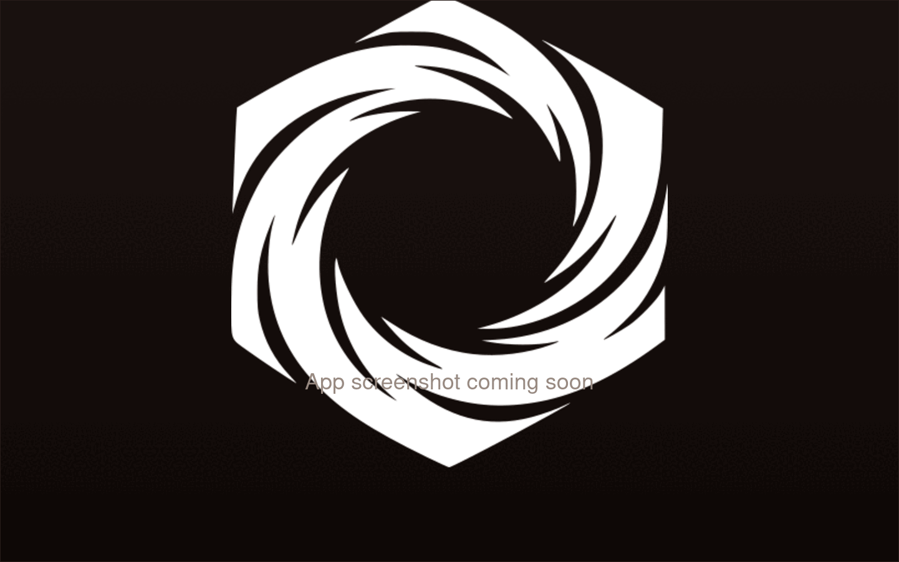

Guild Wars 2 · Desktop build editor
Forge Guild Wars 2 builds.
Publish them with one click.
A native editor for professions, traits, skills, and gear — that publishes your build library to your own GitHub Pages site.

What's in the box
-
Native build editor
Professions, three specialization lines with trait picks, heal / utility / elite skills.
-
Live GW2 wiki lookups
Selected traits and skills resolve to a wiki summary panel without leaving the app.
-
Publish to your GitHub Pages
First-time setup wires a dedicated
axiforgerepo and Pages workflow automatically. -
Equipment, tags, and notes
Annotate builds with the gear they need and how to play them.
-
Theme variety
Molten Core, Frostforge, Verdant Crucible, Cinderfall, plus accent overrides.
-
Free, open source, no telemetry
MIT licensed. GitHub device-flow auth only — nothing else leaves your machine.
How it works
-
1
Install & sign in
Download for your OS, then sign in with GitHub via device flow.
-
2
Build
Pick a profession, dial in specs and skills, add equipment notes and tags.
-
3
Publish
One click pushes your library to
yourname.github.io/axiforge.
Get AxiForge
Latest release